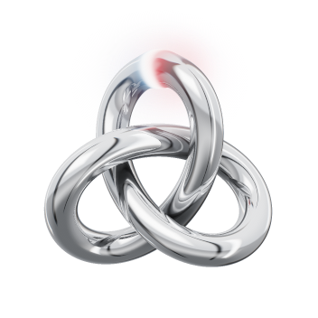
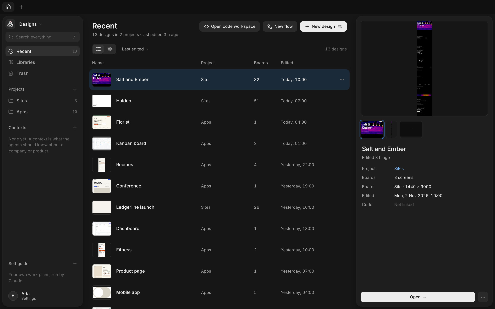
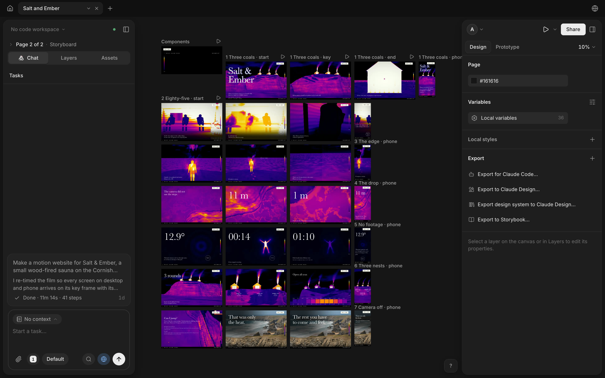
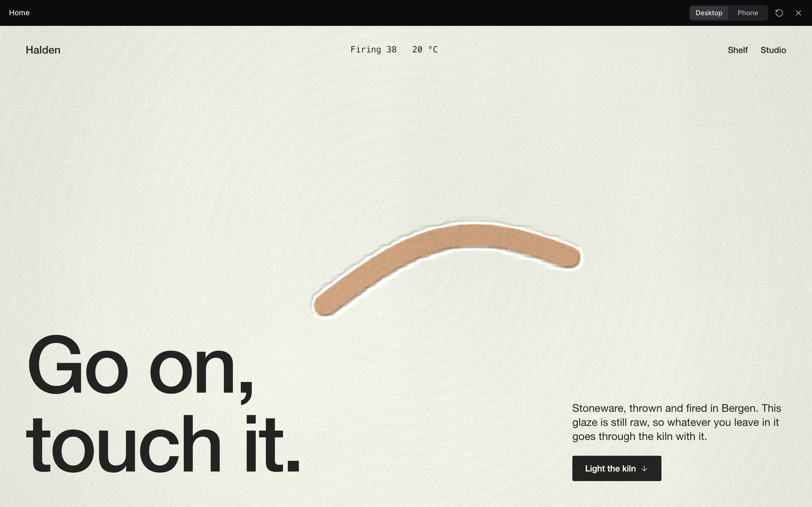

Live canvas
Agents build while you watch.

KnotA design app whose agents study real products, then build your screens while you watch.
Agents build while you watch.
Real products, studied and on record.
Run any board live, in place.
Paste in, copy back, nothing lost.
Publish once, update everywhere.
Link a repo, build into it.
HTML, PDF, PowerPoint, Claude Code.
Your company's knowledge, every turn.



Generated screens all look the same.
Knot's agents are told why.
The guide names every tell, and a critic reads each turn against your references.
Apple silicon. The agents run on your Claude Code login.
Independent software, not affiliated with Anthropic, Figma or Pen.